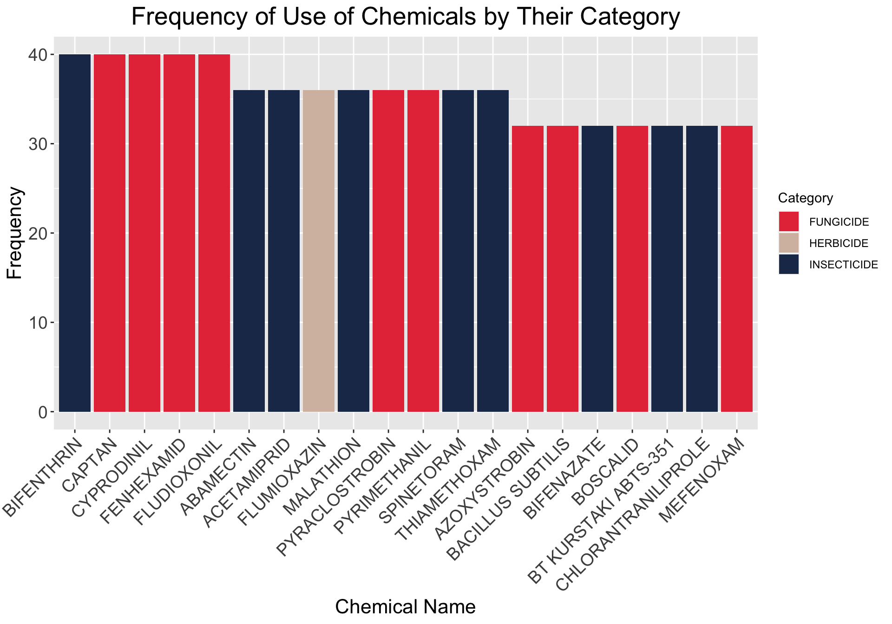
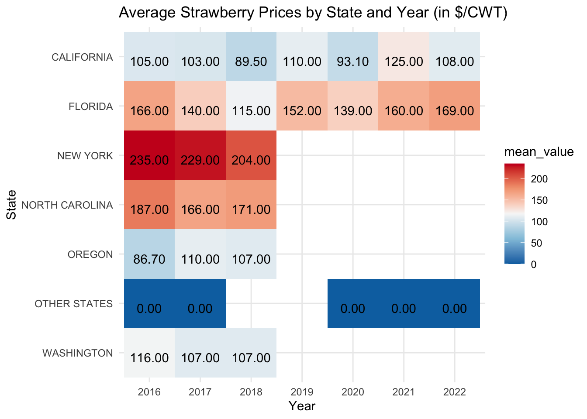
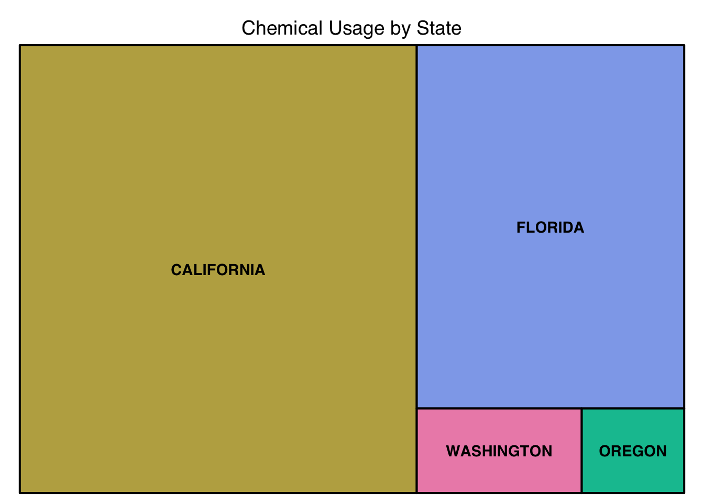
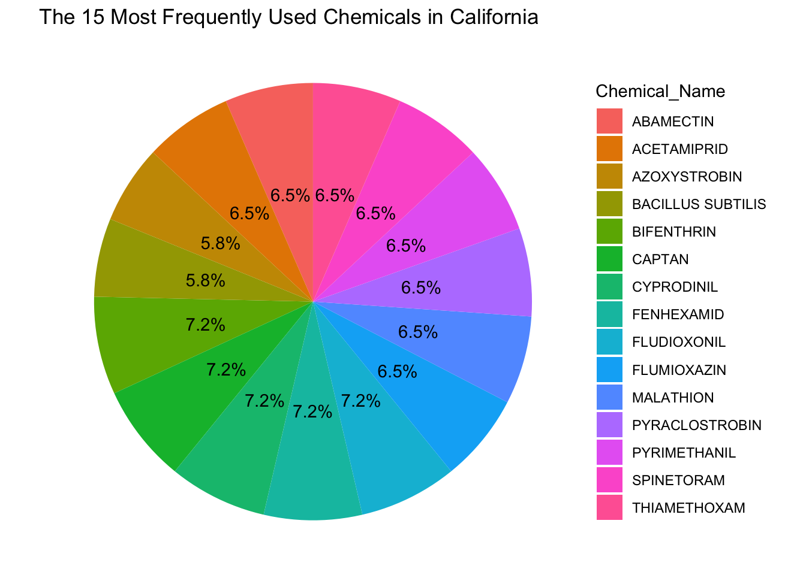

Rows: 4,314
Columns: 21
$ Program <chr> "CENSUS", "CENSUS", "CENSUS", "CENSUS", "CENSUS", "…
$ Year <dbl> 2021, 2021, 2021, 2021, 2021, 2021, 2021, 2021, 202…
$ Period <chr> "YEAR", "YEAR", "YEAR", "YEAR", "YEAR", "YEAR", "YE…
$ `Week Ending` <lgl> NA, NA, NA, NA, NA, NA, NA, NA, NA, NA, NA, NA, NA,…
$ `Geo Level` <chr> "STATE", "STATE", "STATE", "STATE", "STATE", "STATE…
$ State <chr> "ALASKA", "ALASKA", "ALASKA", "ALASKA", "ALASKA", "…
$ `State ANSI` <chr> "02", "02", "02", "02", "02", "02", "02", "06", "06…
$ `Ag District` <lgl> NA, NA, NA, NA, NA, NA, NA, NA, NA, NA, NA, NA, NA,…
$ `Ag District Code` <lgl> NA, NA, NA, NA, NA, NA, NA, NA, NA, NA, NA, NA, NA,…
$ County <lgl> NA, NA, NA, NA, NA, NA, NA, NA, NA, NA, NA, NA, NA,…
$ `County ANSI` <lgl> NA, NA, NA, NA, NA, NA, NA, NA, NA, NA, NA, NA, NA,…
$ `Zip Code` <lgl> NA, NA, NA, NA, NA, NA, NA, NA, NA, NA, NA, NA, NA,…
$ Region <lgl> NA, NA, NA, NA, NA, NA, NA, NA, NA, NA, NA, NA, NA,…
$ watershed_code <chr> "00000000", "00000000", "00000000", "00000000", "00…
$ Watershed <lgl> NA, NA, NA, NA, NA, NA, NA, NA, NA, NA, NA, NA, NA,…
$ Commodity <chr> "STRAWBERRIES", "STRAWBERRIES", "STRAWBERRIES", "ST…
$ `Data Item` <chr> "STRAWBERRIES, ORGANIC - OPERATIONS WITH SALES", "S…
$ Domain <chr> "ORGANIC STATUS", "ORGANIC STATUS", "ORGANIC STATUS…
$ `Domain Category` <chr> "ORGANIC STATUS: (NOP USDA CERTIFIED)", "ORGANIC ST…
$ Value <chr> "2", "(D)", "(D)", "(D)", "2", "(D)", "(D)", "142",…
$ `CV (%)` <chr> "(H)", "(D)", "(D)", "(D)", "(H)", "(D)", "(D)", "1…Stawberries: exploratory data analysis
Initial questions
1.What are the main states producing strawberries?
2.What are the prices of strawberries by state?
3.How should the data be cleaned?
4.Which state uses the most pesticides?
5.Whether any state uses toxic chemicals?
Data acquisition and assessment
- The data set is selected from: USDA_NASS
- There are many missing values in the dataset, so we will clean up the data later.
First let’s read the data file and have a glimpse of the data.
Then, let’s look for the top 5 states that have the highest strawberry sales.
# Converts the 'Value' column to numeric type, handling non-numeric inputs
strawberry$Value <- as.numeric(as.character(strawberry$Value), na.rm = F)
# Group by 'State' and 'Year', then sum 'Value'
grouped <- strawberry |>
group_by(State, Year) |>
summarise(Value = sum(Value, na.rm=TRUE), .groups='drop')
# Find the top 5 states for total sales
top_5_states <- names(sort(tapply(grouped$Value, grouped$State, sum), decreasing = TRUE)[1:5])
paste("Top 5 States by Strawberry Sales:", paste(top_5_states[1:5], collapse = ", "))[1] "Top 5 States by Strawberry Sales: CALIFORNIA, FLORIDA, NORTH CAROLINA, MASSACHUSETTS, MICHIGAN"Make a plot.
# Data for only the first five states are included
top_5_states_df <- grouped[grouped$State %in% top_5_states, ]
# Use ggplot2 to create a bar chart
ggplot(top_5_states_df, aes(x = Year, y = Value, fill = State)) +
geom_bar(stat = "identity", position = "stack") +
labs(
title = "Top 5 States by Strawberry Sales Over the Years",
x = "Year",
y = "Sales Value"
) +
scale_x_continuous(breaks = seq(2016,2022,1)) +
scale_fill_manual(values = c("#FFBE0B", "#FB5607", "#FF0000", "#8338EC", "#3A86FF")) +
theme(
plot.title = element_text(hjust = 0.5, size = 20),
axis.title.x = element_text(size = 14),
axis.title.y = element_text(size = 14),
axis.text.x = element_text(size = 12),
axis.text.y = element_text(size = 12)
) +
theme_minimal()
It can be observed that California consistently records very high sales values each year. We may explore this further later.
Data cleaning and organization
For data cleaning, we start by removing columns that have the same value in every row. Next, we split the dataset into two separate DataFrames: one for CENSUS and another for SURVEY data. Additionally, we perform cleaning operations on the ‘Value’ column. To make the data more suitable for analysis, we also split the string values within the Data Item.
[1] "Every row has value in the State column."[1] TRUEEDA
First, we would like to know about the use of chemicals. For example, we want to know which chemicals are commonly used. So we extract chemical name and code from strwb_survey_chem.
# Extract chemical name and code
strwb_survey_chem <- strwb_survey_chem %>%
mutate(Chemical_Name = str_extract(temp43, "(?<=\\()(.*?)(?= =)"),
Chemical_Code = str_extract(temp43, "(?<= = )(\\d+)"))Because the units of measurement of chemicals are inconsistent, it is difficult to calculate the exact amount of use, but we can calculate the frequency of use of chemicals.
# Count the frequency of each unique chemical substance in the 'Chemical_Name' column
chemical_frequency <- table(strwb_survey_chem$Chemical_Name)
# Sort the chemicals by their frequency from high to low and take the top 20
top_20_chemicals <- head(sort(chemical_frequency, decreasing = TRUE), 20)
filtered_strwb_survey_chem <- strwb_survey_chem[strwb_survey_chem$Chemical_Name %in% names(top_20_chemicals), ]
# Rename
filtered_strwb_survey_chem <- filtered_strwb_survey_chem |>
rename(Category = temp23)Make a plot of Frequency of Use of Chemicals by Their Category.
ggplot(filtered_strwb_survey_chem) +
aes(x = reorder(Chemical_Name, -table(Chemical_Name)[Chemical_Name]), fill = Category) +
geom_bar() +
labs(
title = "Frequency of Use of Chemicals by Their Category",
x = "Chemical Name",
y = "Frequency"
) +
scale_fill_manual(values = c("#E63946", "#D5BDAF", "#1D3557")) +
theme(
plot.title = element_text(hjust = 0.5, size = 20),
axis.title.x = element_text(size = 16),
axis.title.y = element_text(size = 16),
axis.text.x = element_text(size = 14, angle = 45,vjust = 1, hjust=1),
axis.text.y = element_text(size = 14),
)
From the plot, we can see that Fungicide and Insecticide are widely used by states.
In the section of Data acquisition and assessment, we found that California is rich in strawberries production. So, we want to take a closer look at strawberries in California, including prices and chemical use.
Here we take a look at the prices of strawberries in California and other states.
# Drop rows with missing values in 'Value' column
strwb_survey_mkt_filtered <- strwb_survey_mkt |>
drop_na(Value)
# Filter out rows that contain information about 'PRICE RECEIVED'
strwb_survey_mkt_price <- strwb_survey_mkt_filtered |>
filter(temp1b == 'PRICE RECEIVED')
# Group the data by State and Year, then compute the average price
grouped_data <- strwb_survey_mkt_price |>
group_by(State, Year) |>
summarize(mean_value = mean(Value, na.rm = TRUE), .groups = 'drop') |>
ungroup()
# Create the heatmap
ggplot(grouped_data, aes(x = as.factor(Year), y = State, fill = mean_value)) +
geom_tile() +
geom_text(aes(label = sprintf("%.2f", mean_value)), vjust = 1) +
#scale_fill_gradient(low = "#3a4cc0", high = "#b30326") +
scale_fill_gradientn(colors = rev(brewer.pal(5, "RdBu"))) +
scale_y_discrete(limits = rev(unique(grouped_data$State))) + # Reverse the order of states
labs(title = 'Average Strawberry Prices by State and Year (in $/CWT)',
x = 'Year', y = 'State') +
theme_minimal()
It’s very clear that average strawberry price in California is relatively low.
Then, we take a look at the Chemical usage by California and other states.
# Group the data by 'State' and count the frequency of each chemical in each state
state_chemical_count <- strwb_survey_chem %>%
group_by(State) %>%
summarize(Chemical_Name_count = n())
# Sort the data to find the state with the most frequent use of chemicals
state_chemical_count <- state_chemical_count %>%
arrange(desc(Chemical_Name_count))
# Draw a treemap
treemap(state_chemical_count,
index = "State",
vSize = "Chemical_Name_count",
draw = TRUE,
vColor = "Chemical_Name_count",
title = "Chemical Usage by State")
Needless to say, California has a large strawberry crop, so it obviously uses a lot of chemicals to kill insects.
Therefore, let’s take a look at which chemicals are most commonly used in California.
# Consider the top 15 chemicals
most_used_chemicals_15 <- strwb_survey_chem |>
filter(!is.na(Chemical_Name)) |>
group_by(Chemical_Name) |>
summarize(Total_Frequency = n()) |>
arrange(desc(Total_Frequency)) |>
head(15)
# Calculate the total frequency
total_frequency <- sum(most_used_chemicals_15$Total_Frequency)
# Calculate the percentage for each chemical
most_used_chemicals_15$Percentage <- (most_used_chemicals_15$Total_Frequency /
total_frequency) * 100
# Plot the top 15 most commonly used chemicals in pie chart form
library(ggplot2)
ggplot(most_used_chemicals_15, aes(x = "", y = Total_Frequency, fill = Chemical_Name)) +
geom_bar(stat = "identity", width = 1) +
geom_text(aes(label = sprintf("%.1f%%", Percentage)),
position = position_stack(vjust = 0.5)) +
coord_polar(theta = "y") +
theme_void() +
labs(title = "The 15 Most Frequently Used Chemicals in California")
From the plot, it can be seen that the top 5 most commonly used chemicals in California are BIFENTHRIN, CAPTAN, CYPRODINIL, FENHEXAMID, FLUDIOXONIL.
As for their potential health effects:
1.Bifenthrin has the low toxicity for mammals, and good biodegradability.
2.Captan was previously cited as Group B2, a probable human carcinogen by the US Environmental Protection Agency (EPA), but was reclassified in 2004.
3.Cyprodinil is a recognized irritant, however, no serious human health concerns have been identified.
4.Fludioxonil is toxic to fish and other aquatic organisms
References
Quick Stats Column Definitions